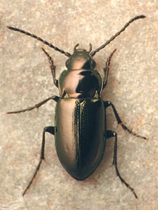
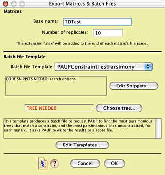
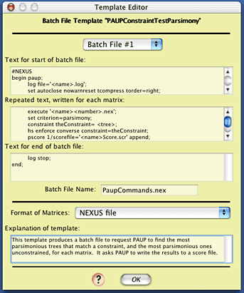

Testing monophyly of a group of beetles
David R. Maddison
The question
There is an enigmatic group of terrestrial beetles
called the Trachypachidae (left, below). These had traditionally
been considered to be related to other terrestrial beetles in
the suborder Adephaga, but later analyses of morphological data
suggested (Bell, 1966; Hammond, 1979; Roughley, 1981; Ward, 1979)
that they were instead closely related to some water beetles,
the Dytiscoidea (right, below).

A terrestrial trachypachid (Trachypachus holmbergi, left)
and an aquatic dytiscoid (Hydrocanthus sp., right).
Shull et al. (2001) report sequence data of the
18S rRNA gene suggesting that trachypachids are not related to
dytiscoids, but are instead related to some other terrestrial
beetles. For example, the most parsimonious trees in one analysis
have trachypachids with other terrestrial adephagans, and not
with dytiscoids. Forcing trachypachids with dytiscoids increases
the treelength by 9 steps.
However, given the vagaries of the evolutionary
process and phylogenetic inference, it is possible that even if
trachypachids and dytiscoids are truly related, one might incorrectly
infer that they are not, just by chance or because of difficulties
such as long branch attraction (Felsenstein, 1978; Hendy &
Penny, 1989; Huelsenbeck, 1997). A statistical test could help
us determine whether or not a difference of 9 steps between trees
with trachypachids placed with dytiscoids and unconstrained trees
is expected under the hypothesis that trachypachids and dytiscoids
are related.
A statistical test
Is 9 steps a significant difference in treelength
in this context? Can we can reject the monophyly of trachypachids
plus dytiscoids?
To test the hypotheses that trachypachids are related
to dytiscoids, we first need to flesh out its details of the hypothesis.
It needs to be detailed enough to allow us to predict the observations
we would expect to see if this hypothesis were true. First of
all, we will need a detailed phylogenetic hypothesis. We could
find the tree of highest likelihood for 18S rDNA under the constraint
that trachypachids are with dytiscoids; for one matrix, this tree
is as shown below, with trachypachids marked in green and dytiscoids
in blue.

Branch lengths of this tree and parameter values
for a GTR + Gamma + Proportion Invariant (GTR+G+I) model of evolution
are estimated by maximum likelihood using the 18S rDNA data. We
thus have built a model that contains our best guess of the nature
of evolution presuming that trachypachids and dytiscoids form
a clade; the details of the model were established using the 18S
rDNA data.
We can now ask: if evolution occurred under a GTR+G+I
model with the parameter values as inferred, up the tree shown
above (with trachypachids and dytiscoids forming a clade), then
what would we expect the difference in treelength to be between
the most parsimonious trees constrained to have trachypachids
with dytiscoids and the most parsimonious unconstrained trees?
Would that difference in general be similar to the observed value,
9? Or is 9 an unexpected value? Specifically, is 9 a value that
we would expect to observe less than 0.05 of the time? If so,
then we could reject the hypothesis that trachypachids are related
to dytiscoids.
This test is an example of the use of parametric
bootstrapping (Huelsenbeck et al., 1995; Swofford et al., 1996;
Goldman et al., 2000). It is almost identical to the monophyly
test proposed by Huelsenbeck et al. (1996), except that they use
a difference in likelihood rather than treelength as their test
statistic. Treelength is used here for pedagogical reasons as
it allows the reader to conduct the test quickly; the methods
described below could easily be modified to use likelihood values
instead.
Building the statistical test
To conduct this test, in Mesquite open the example
file "study001.nex", in the folder
Mesquite_Folder/docs/mesquite/studies/study001/. This file contains
a matrix of 18S rDNA, and the tree of highest likelihood found
in which trachypachids are with dytiscids, with branch lengths
inferred from the data. It also contains a GTR+G+I model with
parameters inferred by PAUP* using maximum likelihood and 18S
rDNA. We will ask Mesquite to simulate 100 matrices, and then
(using the batch file Mesquite produces) ask PAUP* to find the
most parsimonious trees with trachypachids constrained to be with
dytiscoids and the most parsimonious unconstrained trees, and
write their treelengths to a scorefile. Mesquite will then read
in the results and calculate the distribution of treelength differences,
allowing us to determine if the observed value of 9 is unusual.
The simulations can be done by choosing (Tree
Window) Analysis > Batch Architect > Export Matrices &
Batch Files.... After selecting "Simulated Matrices
on Current Tree" and "Evolve DNA Characters", choose
the GTR+G+I model. You will then be presented with the Export
Matrices & Batch Files dialog box. Give a base name for the
matrices of "TDTest", and do 100 replicates. We will
use the template "PAUPConstraintTestParsimony":

If you wish to look at the contents of this template,
touch on "Edit Templates", and in the Template Manager,
select "PAUPConstraintTestParsimony", and press "View".
(As this template is built-in, you can't edit it, only view it.)
You will see some elements of the batch files that will be produced.

The complexity of this template needn't be of concern.
If you are interested, details of how it works are presented in
" Design
of Batch Templates". Just press "OK" to get
back to the Template Manager, and then press "Done".
You are almost ready to have Mesquite simulate the
matrices. However, the template we are using requires that we
specify a tree to use as a constraint tree. In this case, the
constraint tree is one with trachypachids with dytiscoids, but
with no other structure. A tree like this is stored in the file
under the name "TD constraint". To choose it, touch
the "Choose Tree" button, and select "TD constraint".
All the options have now been chosen. Press the
"OK" button in the Export Matrices and Batch Files dialog
box to start the simulation. You will be asked for a location
to save the files, and be given some messages. When you are asked
for the number of characters, Mesquite recognizes that you are
calculating some elements of the model using an existing matrix
(in particular, the frequencies of A, C, G, and T), and for this
reason it gives as the default number of characters the number
in the original matrix. That's the number we want to use in this
case, as we want the simulation to be as realistic as possible.
Once the simulations are all done, then go into
PAUP*, and execute the file "PaupCommands.nex". When PAUP* completes
its analyses, go back to Mesquite, and choose (Tree
Window) Analysis > Batch Architect > Show Results via Instruction
File.... Choose the file "MesquiteInstructions",
in the same folder as the simulated matrices, and then choose
the results file (which should be called "TDTestScore.scr",).
Mesquite should then show you a histogram of the treelength differences.
Interpreting the results
An analysis of this exact sort but with 500 replicates yielded
the following histogram:

Of the 500 replicates, 439 had a value 0, 58 had a value 1, and
3 had a value 2. You can determine these numbers by touching on
each bar with the arrow:

You can also see these values by going to the Text view of the
chart (by touching the Text tab at the upper part of the chart
window):

To see what values are in a specified percentile of the left
or right tail of the distribution, you can choose (Bar
& Line Chart) Chart> Analysis > Percentiles....
In the dialog box presented, you can choose the value of the percentile,
the color of the bar to be shown, and whether the left or right
tails (or both) are calculated. By default, the percentile value
is 0.05; on this example, it would be displayed as:

All values to the right of this red bar are thus
in the extreme of the distribution, and our simulation would suggest
that any value greater than or equal to 2 would occur with a frequency
of less than 0.05. Our observation of 9 is thus an unlikely outcome
if our hypothesis were true. Thus, we can reject our hypothesis
at p < 0.05, and conclude that trachypachids and dytiscoids
do not form a clade.
As it may be hard to interpret the value of the boundaries by
the colored vertical lines, you might want to know the exact values
of the percentile boundaries. This information can can be gathered
by looking at the text view for the histogram. Toward the bottom
of the text view in the above example is the following:

The percentile bar shown will be that that is closest
to that requested, but not over it.
The behavior of Mesquite can best be illustrated
with another example. If you requested a percentile of 0.05, and
if a percentile bar might be placed at 0.043 (left, below), but
moving it one increment higher would include enough values to
increase the percentile to 0.051 (right, below), then the percentile
bar shown will be 0.043.


Summary
The hypothesis tested herein was the monophyly of a clade. The
steps in the test are:
- Determine the observed value of the test statistic for the
observed DNA sequences. In this case, the treelength of unconstrained
most-parsimonious trees was determined using PAUP*, and was
then subtracted from constrained (trachypachids with dytiscoids)
treelength.
- The best tree matching the hypothesis to be tested (trachypachids
with dytiscoids) is inferred using the available sequence data,
with branch lengths inferred using maximum likelihood. This
is the model tree.
- Values of parameters of a model of sequence evolution (gamma
shape parameter, rate matrices, etc.) are inferred using maximum
likelihood on the model tree for the DNA sequences.
- The data matrix is opened in Mesquite, along with the model
tree. Submodels and a model of character evolution are created
within Mesquite to match those inferred.
- Mesquite's Batch Architect is used to automate the process
of simulating the evolution of multiple (100 or more) data matrices
under this model, using Mesquite's Genesis package. Batch Architect
also builds a command file for PAUP* and an instruction file
for Mesquite so that it can interpret the results of the PAUP*
analyses.
- The command file is executed in PAUP*, telling PAUP* to search
for the shortest constained and unconstrained trees for each
of the simulated matrices, accumulating the results into a score
file.
- The Mesquite Instructions file is then read into Mesquite,
and the score file is read, and Mesquite presents a histogram
of the distribution of the test statistic (constrained treelength
- unconstrained treelength).
- The observed value of the test statistic is compared to the
distribution of the statistic expected under the model as determined
by the simulations. If the observed value is more extreme than
that expected (say, greater than 95% of the expected values),
the hypothesis is rejected.
References
Bell, R. T. 1966. Trachypachus and the origin of Hydradephaga.
Coleopts Bull. 20:107-112.
Felsenstein, J. 1978. Cases in which parsimony and compatibility
methods will be positively misleading. Systematic Zoology, 27,
401-410.
Goldman, N., J. P. Anderson, and A. G. Rodrigo. 2000. Likelihood-based
tests of topologies in phylogenetics. Syst. Biol. 49:652–670.
Hammond, P. M. 1979. Wing-folding mechanisms of beetles with
special reference to investigations of Adephagan phylogeny. Pp.
113-180 in Carabid beetles; their evolution, natural history,
and classification (T. L. Erwin, G. E. Ball, D. R. Whitehead,
and A. Halpern, eds.) . W. Junk, The Hague.
Hendy, M.D. & Penny, D. 1989. A framework for the quantitative
study of evolutionary trees. Systematic Zoology, 38, 297-309.
Huelsenbeck, J.P., Hillis, D.M. & Jones, R. 1995. Parametric
bootstrapping in molecular phylogenetics: Applications and performance.
Molecular zoology: Advances, Strategies, and Protocols; Symposium
held during Annual Meeting of the American Society of Zoologists,
St. Louis, Missouri, USA, January 5-8, 1995 (ed. by J. D. Ferraris
& S. R. Palumbi), pp. 19-45. Wiley-Liss, Inc., New York.
Huelsenbeck, J.P. 1997. Is the Felsenstein zone a fly trap?
Systematic Biology, 46, 69-74.
Huelsenbeck, J. P., D. M. Hillis, and R. Nielsen. 1996. A likelihood-ratio
test of monophyly. Syst. Biol. 45:546-558.
Roughley, R. E. 1981. Trachypachidae and Hydradephaga (Coleoptera),
a monophyletic unit? Pan-Pac. Entomol. 57:273-285.
Shull, V., A.P. Vogler, M.D. Baker, D.R. Maddison, and P.M. Hammond.
2001. Sequence alignment of 18S ribosomal RNA and the basal relationships
of adephagan beetles: Evidence for monophyly of aquatic families
and the placement of Trachypachidae. Systematic Biology, 50:945-969.
Swofford, D. L., G. J. Olson, P. J. Waddell, and D. M. Hillis.
1996. Phylogenetic inference. Pp. 407-514 in Molecular Systematics
(D. M. Hillis, C. Moritz, and B. K. Mable, eds.) . Sinauer, Sunderland,
MA.
Ward, R. D. 1979. Metathoracic wing structures as phylogenetic
indicators in the Adephaga (Coleoptera). Pp. 181-191 in Carabid
beetles; their evolution, natural history, and classification
(T. L. Erwin, G. E. Ball, D. R. Whitehead, and A. Halpern, eds.)
. W. Junk, The Hague.
Citation for this page
Maddison, D.R. 2004. Testing monophyly of a group
of beetles. Study 1 in Mesquite: a modular system for
evolutionary analysis, version
2.014,
http://mesquiteproject.org.